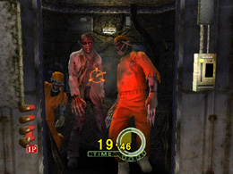
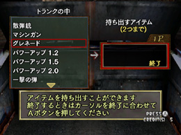
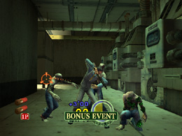
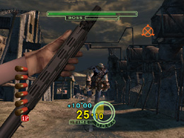
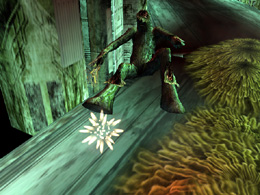

HODIII タイムアタックモード
モード紹介
前回にひきつづき、今回もコアなゲームモードの1つを紹介しちゃいます！
HOD2&3RETURNには、お腹がイッパイになるほどの、ゲームモードが
あるのです。
さて今回は、HODIIIの“タイムアタックモード”について。
このモードでは、画面に「残りタイム」表示され、
「残りタイムがなくなる（＝0になる）とゲームオーバー」
という、非常にスリリングなモードです！
HODIIIをクリアすることができる腕ならば丁度楽しめる歯ごたえです。
それでも、ちょっと遊んでみて「難しい！」と思ったアナタ！
この解説を読んで、もう一度トライしてみてください。

タイムが0になると、ゲームオーバー！
開始時に与えられるタイムは30秒。タイムは刻一刻と減っていき、敵から
ダメージを受けると、さらに減ってしまいます。
ただし！ある条件で敵を倒せば、タイムを増やすことができるのです。
その条件とは…。
【1】出現した敵をすばやく倒す
出現した敵をすばやく倒すと、タイムが加算されます。タイムは、倒すまでの
時間が短ければ短いほど多く加算され、逆に時間がかかりすぎると、
全く加算されません。
敵が出現してから、一定時間内に倒すことができると、画面に「EXCELLENT」と
表示されます。敵が出現したら、すぐに弱点である頭をねらって「EXCELLENT」を
目指しましょう！

「EXCELLENT」を目指そう！
【2】「TWIN SHOT」で倒す
2体の敵を同時に倒せば、画面に「TWIN SHOT」と表示され、「EXCELLENT」の
時よりも、さらに多くのタイムが加算されます。敵が密集して出現した時は、
2体の頭の真ん中あたりをねらって「TWIN SHOT」をねらいましょう！

敵が密集している時は、「TWIN SHOT」をねらえ！
【3】仲間を助ける
敵に囲まれた仲間を助けることができると、ボーナスタイムが加算されます。
失敗してもタイムが減ることはありませんが、ここはタイムを稼いでおきたい
ところ！

ボーナスイベント！敵の頭に3発撃ちこめ！
【4】「時計」をゲットする
ステージに設置してあるドラム缶やボックスなどを破壊すると、中から「時計」の
アイテムが出現することがあります。出現した「時計」をねらって撃つと、
ボーナスタイムが加算されます。
【5】ボスで稼ぐ
タイムを増やせる1番のチャンス…、それはボス！
ボスが攻撃してくるまでにダメージを与えて、攻撃を回避
することができると、ボーナスタイムが加算されます。

たくさんのタイムが加算される
ただし！攻撃を回避するまでに時間がかかってしまうと、せっかく
タイムが加算されても、増えた分は結局プラスマイナス0となってしまいます。
攻撃回避までの時間を、できるだけ短くおさえることがポイントです！
最後に…
タイムは加算されませんが、タイムを節約するちょっとしたヒントを。
【6】「追い撃ち」で倒す
倒された敵が地面でもがいているところを、さらに撃って消滅させる！
これが“追い撃ち”です。地面でもがいている敵は、時間が経過すれば自然と
消滅しますが、その時間を短縮しようというものです！

必ず、残っている残骸は、撃って消滅させる！
みなさん、タイムアタックモードのコツはつかめましたか？
最初は、すぐにタイムが0になってしまうかもしれませんが、上記のポイントに
注意すれば、全ステージクリアも夢じゃありませんよ！
ではまた。
 RSS
RSS